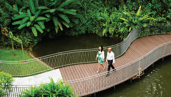

Future-Ready Education

Singapore Polytechnic aims to embrace change and adapt to the future, regardless of age. The organisation prioritises preparing learners to be "life-ready, work-ready, world-ready" as part of its cultural DNA.
As the nation of Singapore prepares to be always future-ready, Singapore Polytechnic's ongoing emphasis on future-readiness should sustain its own contributions, in significant ways, to fostering continuous lifelong learning. This is because the country is truly adopting a culture of learning. With the introduction of technological tools—of which ChatGPT, a generative artificial intelligence platform, is simply the most recent example—the entire manner of learning may undergo further transformations that are unimaginable even now.
The way that SP approaches teaching and learning is not limited to any one strategy or group of techniques. It is dedicated to a diverse, research-based approach to learning design (whether it be for in-person instruction or virtual learning). As of right now, teaching staff can use these two interconnected frameworks—"The Learning Framework" and "The Creative Teaching Framework"—to help them create engaging and innovative learning opportunities for our students. The dedication to integrating proven best practices and established best research on human learning is what makes SP's approach to teaching and learning so intriguing. In addition, it aims to be proactive by generating novel ideas and creatively expanding knowledge. These projects are not limited to the department; everyone is welcome to Contribute to practical action research and push the boundaries of what it means to be a highly skilled and innovative teaching professional. Our lecturers have received the President's Award for Teachers (PAT) in 2017, 2018, 2020, and 2023 as a result of their ongoing efforts to mentor, guide, encourage, and nurture students, making SP the institution with the most award recipients since 2017, when educators from polytechnics and ITEs were included. The PAT acknowledges outstanding educators for their contributions to shaping our nation's future.
Personal/Work Life
Life at work and in the personal sphere is changing drastically. One of the main components of SP's "future-ready" DNA is its global connectivity. Developing an interest in the rest of the world and its diversity is part of this. Along with the ability to comprehend the needs of users and consumers, markets and audiences, an international perspective also fosters empathy with individuals of various cultures, which is essential in most domains of employment.
Industry Disruptions
The entire business has grown considerably more disruptive, with game-changing advancements in artificial intelligence (AI), machine learning, the Internet of Things (IoT), and robotics. To be future-ready, SP must accept and adapt to industry change, whether it stems from technological advancements or other workplace developments. Anticipating the future is the only way to avoid the greatest disruptions and displacements.
Global Shifts
Climate change is the most pressing global concern, according to the majority of people. This subject is also important at Singapore Polytechnic, where initiatives to assist students become more "future-ready" focus on addressing sustainability from a holistic, big-picture viewpoint. The Polytechnic's Sustainable Innovation Project (SIP), one of the Common Core Curriculum's ten modules, embodies this commitment most concretely. This is a learning experience that culminates in a capstone project that students complete during their second year of study.